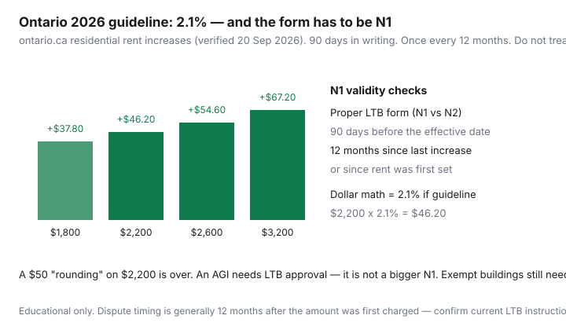

Housing · Canada
Ontario 2026 rent increase guideline (2.1%): how to check if your N1 is valid
Ontario tenants pay the number on the letter because it arrived on letterhead. The public rule is narrower. For 2026 the guideline is 2.1%. The landlord must give at least 90 days’ written notice on the proper Landlord and Tenant Board form — N1 for most guideline units — and may increase rent only once every 12 months. Ontario.ca (residential rent increases, used 20 Sep 2026) also says you can dispute an improper notice or amount at the LTB within 12 months after the amount was first charged.
This is a validity checklist and a dollar table. It is not a ruling on your unit, especially if it is exempt from the guideline.
Disclosure: There is no natural affiliate product in an N1 explainer. Saving Optimizer does not claim LTB or landlord-software partnerships. This is educational money math, not legal advice. Confirm the current N1 PDF on Tribunals Ontario.
Key takeaways
- 2026 guideline: 2.1%. $2,200 × 2.1% = $46.20. A $50 “rounding” is over.
- At least 90 days on Form N1 (N2 if exempt). A text is not the form.
- Once every 12 months. Unused last-year percentage does not stack.
- An above-guideline increase is an LTB application, not a fatter N1.
- The same 2.1% is the usual last-month deposit interest rate for 2026 due dates.
What the 2026 guideline means in dollars on common rents
The guideline is the maximum most covered landlords can take in a year without LTB approval. It is not automatic. It is not asking rent. It is not StatsCan’s +2.8% rent CPI (Daily, 14 Sep 2026). Ontario news materials described 2026 as inflation-based and noted the statutory 2.5% cap on the formula.

Ontario’s “Renting in Ontario: your rights” page had already listed the 2027 guideline at 1.9% when we checked. If your effective date slips into 2027, use that year’s published number — not 2.1% on autopilot.
90-day notice and Form N1 basics
Ontario.ca: written notice in the proper form at least 90 days before the increase takes effect. Forms live on the LTB site. N1 is the usual notice when the guideline applies. Fill-in fields that matter for a tenant reading: current rent, new rent, dollar increase, percentage, and effective date. The increase generally starts on the first day of a rental period (often the 1st). Mail adds time — a notice that lands on day 89 is the pattern that slides. WhatsApp “FYI +$80 in June” is not N1.
Service rules (how the notice may be given) sit on the form and the Act. Read the current PDF rather than a 2019 blog. Keep the envelope.
12-month rule and when increases can start
Rent cannot increase until 12 months after it was first charged to you or last lawfully increased. A new landlord does not reset that clock. If they skipped last year, they do not get 2.1% plus leftover 2.1%. They get this year’s guideline, once, if the notice is valid. The 12-month clock is why a May tenancy start usually means a May-ish earliest increase the following year — count from the date rent was set, not from “when we renovated the lobby.”
Above-guideline increases: what tenants should watch for
Landlords can apply to the LTB to raise rent above the guideline for prescribed reasons (extraordinary municipal tax/charge increases, eligible capital expenditures, and some security-service costs — confirm the current Act and O. Reg. 516/06). You should receive application materials, not just a bigger N1. Watch for:
- Work that looks like ordinary repair dressed up as “capital.”
- A percentage that was never approved.
- An AGI stacked on a unit that is actually exempt (different process) or already at a lawful guideline increase in the same 12 months without the sequencing the regulation describes.
This page will not litigate an AGI. If the package arrives, read it and get advice. Paying the extra “to keep the peace” is how improper amounts become a 12-month clock you then have to race.
Exempt units reminder and why your building may differ
New buildings, additions, and most new basement apartments first occupied for residential purposes after 15 November 2018 are the usual exemption. Those landlords still need 90 days and 12 months; they typically use N2; they do not have a 2.1% amount cap. Community housing and some other categories are outside this worksheet. If the N1 math is “8% because the building is new,” you may be holding the wrong form — or a form that does not make 8% lawful. See the hunter’s exemption explainer.
Negotiation options even when the guideline applies
2.1% is a ceiling, not a duty. You can still ask for 0% or a delayed start if comps are weak, repairs are open, or you are a low-friction tenant. Landlords sometimes prefer certainty over printing the maximum. Scripts and a walk-away that includes moving live in legal-frame pushback and renewal negotiation. Do not trade a two-year term for a smile.
Record-keeping template for multi-year rent history
| Date received | Form (N1/N2/AGI) | Old → new $ | % and effective date | 90-day / 12-month OK? |
|---|---|---|---|---|
| Example | N1 | $2,200 → $2,246.20 | 2.1% · 1 Jun 2026 | Received 1 Mar · last increase 1 Jun 2025 |
| Your 2024 | ||||
| Your 2025 | ||||
| Your 2026 |
Add a line for last-month deposit interest (2.1% on $2,200 = $46.20 for a 2026 due date). Small, but T1 lists unpaid interest as a reason. If the N1 is invalid and they still charge it, ontario.ca points to the LTB within 12 months. Write first. Then file if you need to. This is not a filing kit.
Sources & date stamps
- Ontario.ca, Residential rent increases — 2026 guideline 2.1%; 90-day written notice; proper LTB form; dispute within 12 months (used 20 Sep 2026).
- Ontario.ca, Renting in Ontario: your rights — 2027 guideline listed at 1.9% (verify).
- Ontario Newsroom — 2026 cap described as 2.1%; 90 days; 15 Nov 2018 occupancy note.
- Tribunals Ontario, Form N1 PDF — notice of rent increase (confirm current version and service instructions).
- RTA ss.116, 119–120, 126 themes — notice, 12 months, guideline, AGI (read the statute).
Frequently asked questions
What is the Ontario rent increase guideline for 2026?
2.1% for most units covered by the guideline (ontario.ca residential rent increases, verified 20 Sep 2026). On $2,200 rent that is $46.20. The same 2.1% is the usual interest rate on a last-month rent deposit for interest due in 2026.
What makes a Form N1 valid?
At a high level: the proper LTB form (N1 for guideline units), at least 90 days’ written notice before the effective date, no increase until 12 months after rent was set or last increased, and a dollar amount that does not exceed 2.1% unless an LTB-approved AGI applies. A text or email slogan is not the form. Confirm service rules on the current N1 PDF.
What if my building is exempt from the guideline?
Units first occupied for residential purposes after 15 November 2018 are often exempt from the 2.1% cap. Those landlords typically use Form N2. They still need 90 days and the 12-month spacing. There is no provincial percentage cap of the N1 kind on the amount.
Is an above-guideline increase just a bigger N1?
No. An AGI is a landlord application to the LTB for specific cost categories (for example municipal taxes or capital work). It is not a licence to write 8% on an N1. Read the AGI package if you receive one; this page will not litigate it.
Is this legal advice?
No. It is a date-stamped savings checklist. Improper amounts can generally be disputed at the LTB within 12 months after the amount was first charged — confirm current instructions. Use Tribunals Ontario or a licensed advisor for your facts.